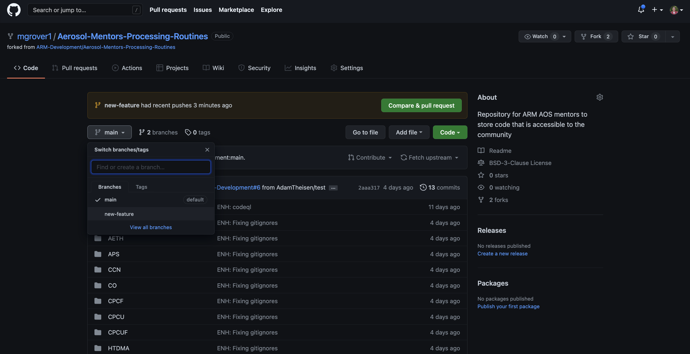
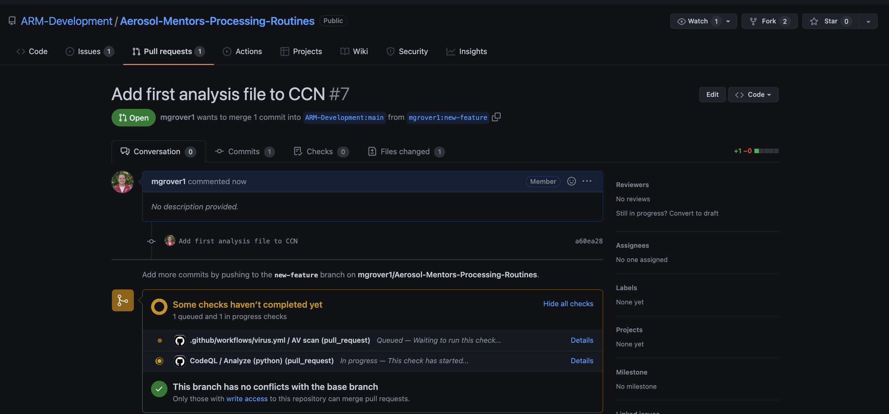

Contributing Using Branches and Pull Requests
Contents
Contributing Using Branches and Pull Requests¶
Overview:¶
What is a Pull Request (PR)?
Forking + Branch Workflow
Creating a Branch and Making Changes
Submit Your First Pull Request
What is a Pull Request?¶
A Pull Request (PR) is a formal mechanism for requesting that changes that you have made to one repository are integrated (merged) into another repository. Typically, the changes are reviewed by the maintainers of the destination repository, potentially triggering a cycle of revisions, before the PR is “merged”, and your changes become part of the destination repo.
Just like issues, PRs have their own discussion forum for communicating about the proposed changes. In fact, not only can maintainers or collaborators communicate about your PR via GitHub, they can also suggest changes and may even be able to make changes of their own by pushing follow-up commits. All of the activity, from start to finish, is tracked inside of the PR and can be reviewed at any time.
When a contributor to a project creates a PR they are requesting that the owners of another destination repository pull a git branch from the contributor’s repository and merge the contents of the branch into a branch of the destination repository. This means that the contributor must provide four pieces of information: the contributor’s repository, the contributor’s branch, the destination repository, and finally, the destination branch.
After the maintainers or collaborators of the destination review the changes, and any suggested revisions are made, the project maintainer merges the feature into the destination repository and closes the PR.
Forking & Branch Workflow¶
A typical sequence of steps consists of the following:
A contributor forks the upstream repository, creating a remote clone that is owned by the contributor (as you did in the previous section)
The contributor then clones the newly created personal remote repository, creating a local copy. (We did this in the previous section)
The contributor creates a new branch in their local repository
The contributor makes changes to the branch and commits them to their local repository
The contributor pushes the branch to their personal remote repository that was created in step 1
The contributor submits a PR via GitHub to the upstream repository
What’s a Branch?¶
Git branches allow for non-linear or differing revision histories of a repository. At a point in time, you can split your repository into multiple development paths (branches) where you can make different commits in each, typically with the ultimate intention of merging these branches and development changes together at a later time.
Branching is one of git’s methods for helping with collaborative document editing, much like “change tracking” in Google Docs or Microsoft Word. It enables multiple people to edit copies of the same document content, while reducing or managing edit collisions, and with the ultimate aim of merging everyones changes together later. It also allows the same person to edit multiple copies of the same document, but with different intentions. Some reasons for wanting to split your repository into multiple paths (i.e. branches) is to experiment with different methods of solving a problem (before deciding which method will ultimately be merged) and to work on different problems within the same codebase (without confusing which code changes are relevant to which problem). There are also some convenience bots on GitHub that, if installed in the repository, may not act as intended if your work is all on the main branch.
These branches can live on your computer (local) or on GitHub (remote). They are brought together through Git pushes, pulls, and pull requests. Pushing is how you transfer changes from your local repository to a remote repository. Pulling is how you fetch upstream changes into your branch. And Pull Requests are how you suggest the changes you’ve made on your branch to the upstream codebase.
One rule of thumb is for each development feature to have its own development branch until that feature is ready to be added to the upstream (remote) codebase. This allows you to compartmentalize your pull requests so that smaller working changes can be merged upstream independently of one another. For example, you might have a complete or near-complete feature on its own branch with an open pull request awaiting review. While you wait for feedback from the team before merging it, you can still work on a second feature on a second branch without affecting your first feature’s pull request. We encourage you to always do your work in a designated branch.
Creating Your First Branch¶
Let’s start by going into that repository you cloned!
cd Aerosol-Mentors-Processing-Routines
Let’s checkout which branch we are on!
git branch
* main
Creating our New Branch - new-feature¶
We are currently on the main branchm which is the default. Since we want to add a new feature, we need to create a new branch! Let’s all it new-feature!
git checkout -b new-feature
This command will create a new branch named new-feature, if it
doesn’t exist already, or switch to the existing branch if it does.
Either way, any changes you make will occur in the branch new-feature,
not in main. The output should look something like:
Switched to a new branch 'new-feature'
Making Changes on our New Branch¶
Next, we’ll make changes and commit them to the my-new-feature branch in
the local git repository.
Create a Sample File¶
Let’s create a sample file (analysis.txt) in the CCN/Python/ directory!
Feel free to use your favorite editor fo this!
This is an overview of my analysis
You’ll notice after making that change, if we use the command
git status
We see
On branch new-feature
Untracked files:
(use "git add <file>..." to include in what will be committed)
CCN/Python/analysis.txt
We need to add this new file to be tracked by Github!
Commit Your Changes¶
Since you made changes to your local copy of the repository, you will need to add and commit those changes! You can do this using the following:
git add CCN/Python/analysis.txt
git commit -m "Add first analysis file to CCN"
You’ll see your terminal return something similar to:
1 file changed, 1 insertion(+)
create mode 100644 CCN/Python/analysis.txt
Push Your Branch to Github¶
After running git commit your changes have been captured in your
local repository. But most likely only you can see them, and if
your local file system fails your changes may be lost. To make your
changes visible to others, and safely stored on your remote GitHub
repository, you need to push them. Here is the push command that we expect to fail:
git push
fatal: The current branch new-feature has no upstream branch.
To push the current branch and set the remote as upstream, use
git push --set-upstream origin new-feature
This failed because our copy online does not have our new branch yet! We need to use the following to add our new branch to our non-Local, online copy of the repository!
git push --set-upstream origin new-feature
This now returns:
Enumerating objects: 8, done.
Counting objects: 100% (8/8), done.
Delta compression using up to 12 threads
Compressing objects: 100% (4/4), done.
Writing objects: 100% (5/5), 438 bytes | 438.00 KiB/s, done.
Total 5 (delta 2), reused 0 (delta 0)
remote: Resolving deltas: 100% (2/2), completed with 2 local objects.
remote:
remote: Create a pull request for 'new-feature' on GitHub by visiting:
remote: https://github.com/mgrover1/Aerosol-Mentors-Processing-Routines/pull/new/new-feature
remote:
To https://github.com/mgrover1/Aerosol-Mentors-Processing-Routines.git
* [new branch] new-feature -> new-feature
Branch 'new-feature' set up to track remote branch 'new-feature' from 'origin'.
If we follow that last URL, you will see our new branch!
Submitting a Pull Request¶
You’ll notice at the top of the previous image, in the yellow at the top of the page, is a green bar stating:
Selecting this button will take us to a new page where we can submit our changes to the main repository (https://github.com/ARM-Development/Aerosol-Mentors-Processing-Routines)

At this point, feel free to add any additional details to the changes you are requesting and hit that Create Pull Request button near the bottom!
That will submit your Pull Request (PR), and you will see a screen similar to this:
Now, you can wait for people to review your changes, and eventually merge those into the main branch!
Making Sure Branches Are in Sync¶
It is good practice to make sure that your branches are in sync! For example, if you had a different project (for example CO) you wanted to make changes to, you would not want to include those changes from CCN as well!
Fortunately, Github makes this easy! From your fork of the repository, you will see a “Fetch upstream” dropdown!

It is important to do this early and often and be sure that when you make changes, you follow the process of:
Fetch Upstream Changes on your fork (using the process previously described)
Move to your
mainbranchgit checkout main
Use
git pullto retrieve any changes tomaingit pull
Create your new branch!
git checkout -b new_branch_name
Syncing Your Branch Programatically¶
If you are comfortable with the command line interface, you can also complete the first step (“Fetch Upstream Changes on your fork”) using the following:
Access the “upstream” copy (from ARM-Development)
git remote add upstream https://github.com/ARM-Development/Aerosol-Mentors-Processing-Routines.git
Fetch the upstream changes
git fetch upstream
Merge your upstream changes with your local changes
git merge upstream/main
Push your changes to Github
git push
Summary¶
A Pull Request (PR) is a formal mechanism for requesting that changes that you have made to one repository are integrated (merged) into another repository.
You can create a branch, make changes, and push those changes to Github, then submit a PR with those changes
It is important to keep your fork in-sync with the upstream repository!
What’s Next?¶
Submitting your code to the Aerosol-Mentors-Processing-Routines Repository!